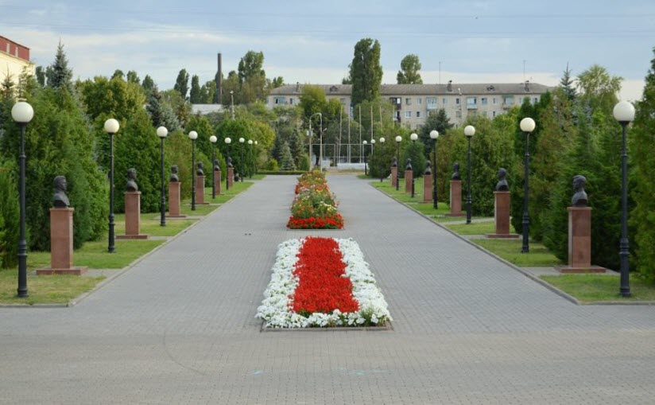

Аллея Героев
В 2010 году облик Парка победы дополнился Аллей героев. Двенадцать бюстов уроженцев города Камышин, удостоенных звания Героя Советского Союза и России, изваял Сергей Щербаков.

Значимые места города Камышин
В 2010 году облик Парка победы дополнился Аллей героев. Двенадцать бюстов уроженцев города Камышин, удостоенных звания Героя Советского Союза и России, изваял Сергей Щербаков.